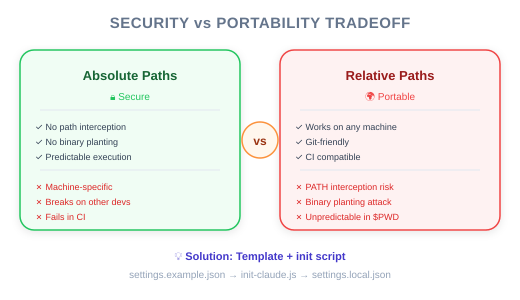

| Item | Details |
|---|---|
| Exam Coverage | D3 — Claude Code Configuration & Workflows (20% of exam) |
| Task Statements | 3.2 (custom commands & hooks), 1.5 (Agent SDK hooks) |
| Course Source | claude-code-in-action / 05-hooks / Lesson 17 (text-only) |
Hook scripts should use absolute file paths for security, but absolute paths are machine-specific and break when shared across a team. The solution is a template file (settings.example.json) with placeholders that an automated setup script converts into machine-specific absolute paths. PMs need to understand this because it affects onboarding, CI/CD configuration, and security compliance.
This lesson addresses a deployment and governance challenge:
Think of hook scripts as key card scanners at office building doors:
| Aspect | Key Card System | Hook Configuration |
|---|---|---|
| Security requirement | Scanner must connect to the exact security server (not any nearby server) | Hook must point to the exact script file (absolute path) |
| Portability problem | Each building has the security server at a different address | Each developer machine has files at different paths |
| Solution | Template card configuration + building-specific setup | Template settings file + machine-specific init script |
| Onboarding | New employee runs card activation at their building | New developer runs npm run setup on their machine |
💡 PM Takeaway
Absolute paths = higher security, but require an automated setup step. If your PRD mandates hooks, include "setup step required for new developer onboarding" in the deployment plan.
After project setup, there are two settings files in the .claude directory:
| File | Who Creates It | In Git? | Contains Hooks? |
|---|---|---|---|
settings.json |
Team lead, committed | Yes | General settings (no machine-specific paths) |
settings.local.json |
Auto-generated by setup script | No | Hook commands with absolute paths |
⚠️ PM Governance Note
If a compliance hook is only in
settings.local.json, it depends on each developer running the setup script. Include this in your onboarding checklist and verify during code reviews.

Two attack types that absolute paths prevent:
| Attack | Business Risk | Prevention |
|---|---|---|
| Path interception | Malicious code runs instead of the intended hook script | Absolute path bypasses directory search |
| Binary planting | Attacker places a fake script in the project directory | Absolute path ignores local files with the same name |
You do not need to understand the technical details, but you should know:
- Security audits will flag relative paths in hook configurations
- The CCA exam expects absolute paths as the correct answer for hook security questions
When a new developer joins and does not run the setup script:
| What Happens | Impact | Fix |
|---|---|---|
settings.local.json does not exist |
No hooks are active | Run npm run setup |
Copy settings.example.json directly |
$PWD placeholders remain — hooks fail silently |
Run the init script properly |
| Manually type paths | Error-prone, may introduce security risks | Use the automated script |
💡 PM Action Item
Add "run project setup script" to your team's onboarding documentation. Verify hooks are active by asking Claude to read a protected file.
| ❌ Wrong Approach | ✅ Correct Approach | Why |
|---|---|---|
| Allow relative paths for convenience | Require absolute paths for security | Relative paths are flagged in security audits |
| Commit machine-specific settings to git | Use template + init script pattern | Machine-specific paths break on other machines |
| Skip setup step documentation | Include setup in onboarding checklist | New developers will have non-functional hooks |
| Assume hooks work after git clone | Verify hooks are active after setup | Generated files are not in git |
Your team has deployed a PreToolUse hook to prevent Claude from accessing credential files. A new developer joins, clones the repo, and starts using Claude Code. Two days later, they discover Claude was able to read credential files on their machine. What is the most likely cause?
settings.local.json was never generatedYour security team requires all hook scripts to use absolute paths. Your CI pipeline runs on dynamically provisioned runners where the workspace directory changes each run. How should you configure hooks for CI?
settings.local.json with the current workspace's absolute pathssettings.jsonDuring a security audit of your AI customer support system, the auditor notes that hook commands use relative paths. The engineering team argues that absolute paths would make settings files harder to share. What is the recommended solution?
settings.example.json template with $PWD placeholders and an automated init script